Spatial Sampling after roof identification
Case study in Masai Lodge / PSP Nairobi 2022
Source:vignettes/learn.step.by.step.1.Rmd
learn.step.by.step.1.RmdA step-by-step tutorial to do a random sampling by roof identification followed
Before starting you need to check the following:
- you have access to GPS Sampling (online or offline with a capsule)
- you have a modern smartphone with OsmAnd and/or a GPS device (i.e. Garmin eTrex)
Overview
This method consists in combining the analysis of a satellite image for the identification of shelters (roofs), followed by a random selection of a sample. This has been allowed by the GPS Sampling app.
This is done in 4 steps:
Delimit: Using the GPS Sampling app, you will define a polygone corresponding to the area of interest
Identify: After, you will scan a recent satellite image and manually click on each roof which seems to be a residential building. In the polygon of interest, this should end up in an “exhaustive” ensemble of roofs
Sample: From this ensemble, GPS Sampling can randomly generate a sample of the desired size, and this random sample of GPS coordinates can then be exported to a GPS device for field data collection in each of the household living under the sampled roofs
Plan: At the office, plan your survey work with the generated sample
Step-by-Step Guide
How to do a random sample of Masai Lodge
Open GPS Sampling
-
Launch GPS Sampling which has been installed on your computer.
Two options:
-
Use the desktop shortcut.
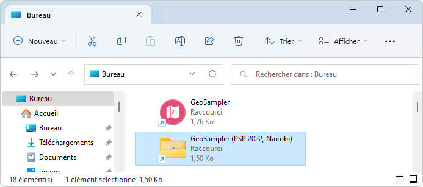
-
Use the launch.bat file in the GPS Sampling folder root.
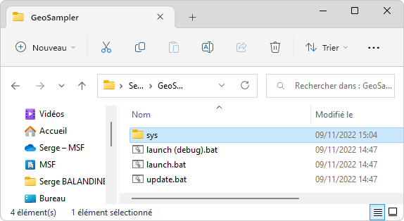
-
-
A DOS window opens at the center of the screen, asking you to choose a command.
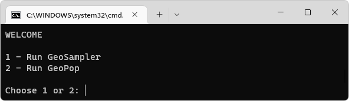
-
Choose GPS Sampling (1 [ENTER]). After a few seconds, GPS Sampling is displayed in your browser. Select Random Sample.
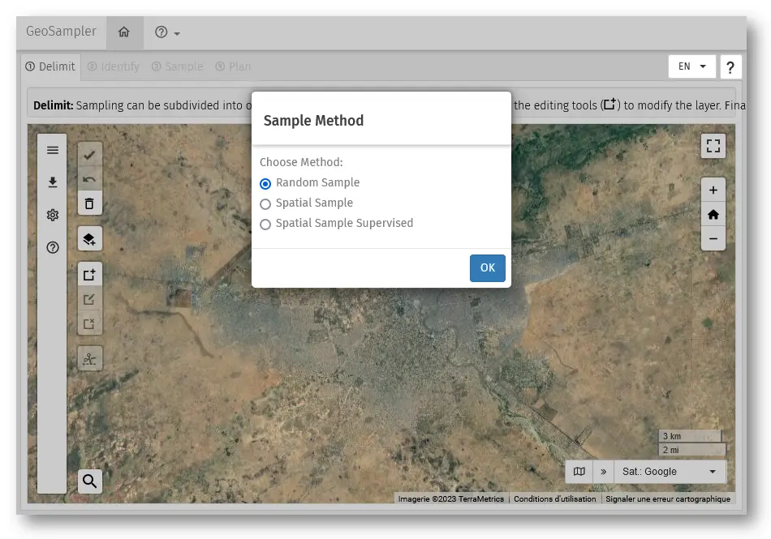
Interface
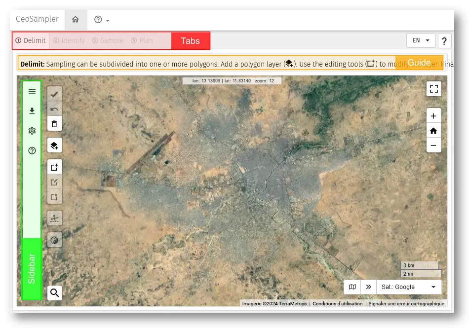
- Tabs: 4 tabs corresponding of the main steps to follow in the procedure. They will be used sequentially 1, 2, 3, then 4.
- Guide: Provide basic information on what is expected to be done in the page displayed..
- Sidebar: …
Step 1: Delimit
In this page, you will define the area of interest (the masai lodge).
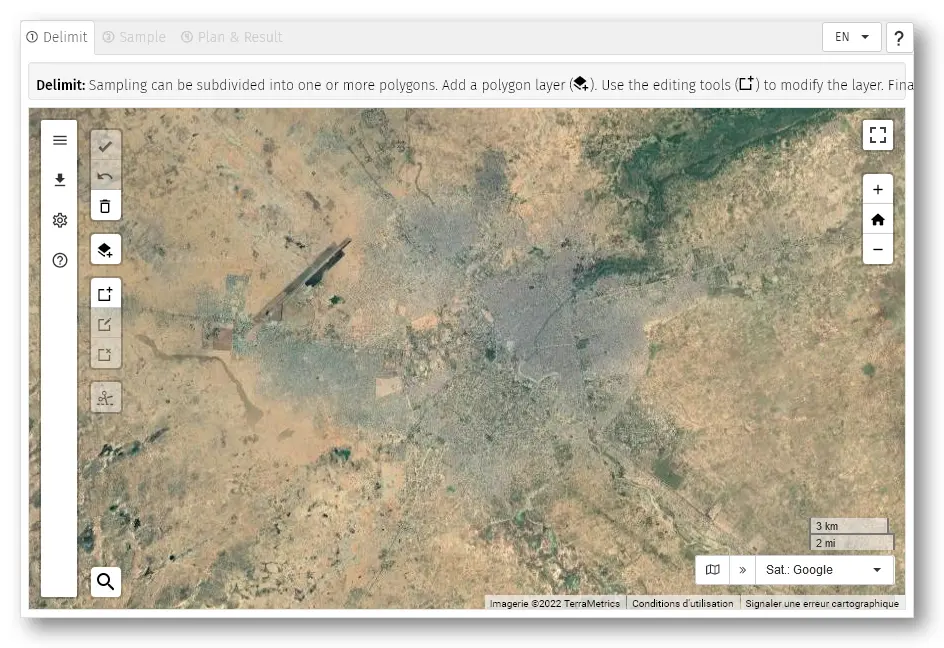
Steps
There are 2 options :
- Drawing a polygon directly, or
- Uploading an existing polygone from an external file (here we practice the 2nd option).
Drawing a polygon directly
A. Find the Masai Lodge
Click on the button Search () on the bottom-left. You can now type a location.
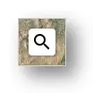
>>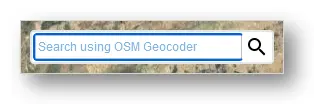
Type in “Masai Lodge”. You find two proposals.
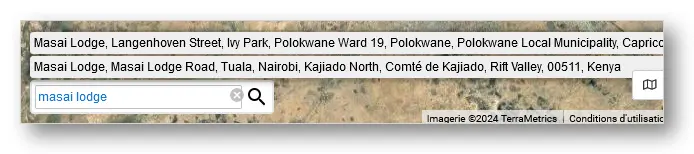
Click on the first proposal (Masai Lodga … Kenya). Map move to the Masai Lodge (On the south-east of the map).
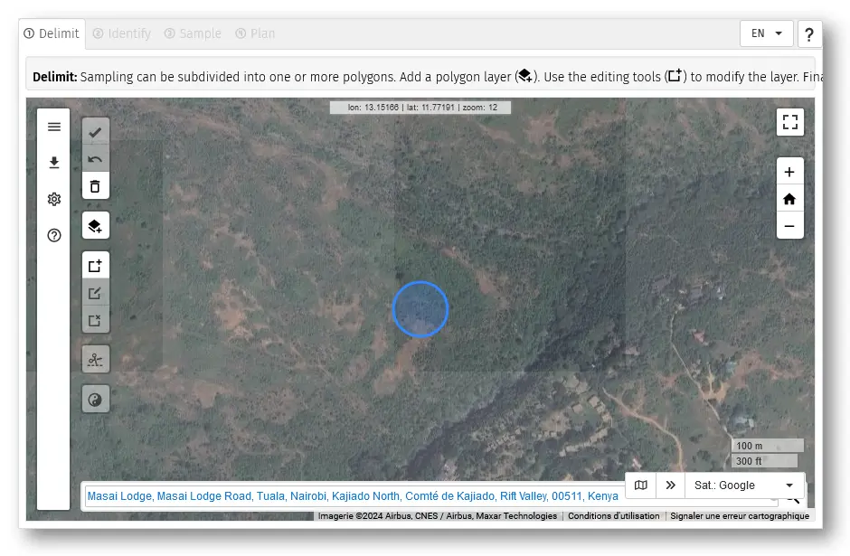
Click on the map to finish.
B. Draw the Masai Lodge delimitation
Use the mouse to place the Masai Lodge in the centre of the app window
Click on the button Draw a polygon ().
-
Click on the map to draw the polygon
- Move the pointer to the image and left-click on the image just outside the refugee camp to mark the first vertex of the polygon
- By moving the mouse clockwise (or anticlockwise) a dashed line is drawn between the first vertex and the mouse pointer
- Mark the second vertex with the aim to surround all camp dwellings and exclude non inhabited zones. With the mark of the second vertex, the dashed line turns into a solid one (see image below)
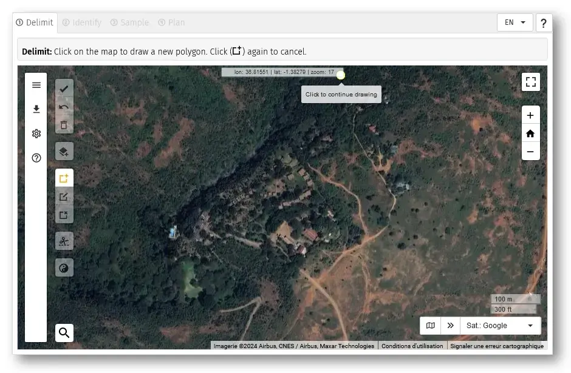
Click on the polygon to select it.
Click on the button Save (). Confirm with OK.
Now, you can go to the next step Identify
Uploading an existing polygone
Click on the button Add a polygon layer… (). This dialog box popup.
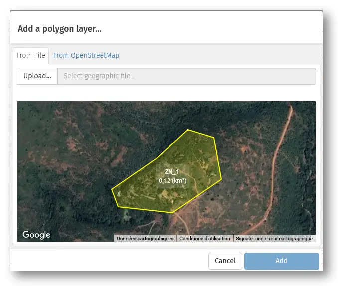
Click on the button Upload… and in the file dialog, navigate in your folders and select the appropriate file (masai-lodge.kmz).
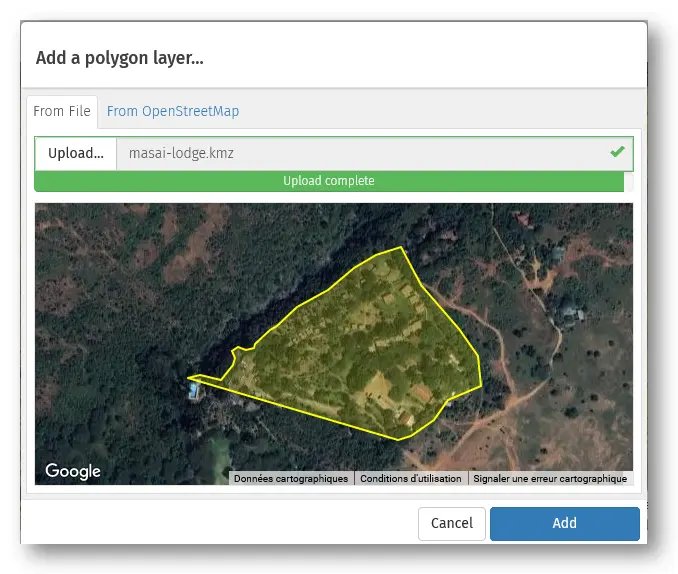
Click on the button Add a polygon layer… when the upload is complete.
Click on the polygon to select it.
Click on the button Save (). Confirm with OK.
Now, you can go to the next step Identify
As in the other method above, do not forget to validate to be able to proceed to step 2 (tab “Identify”) !
Step 2: Identify
In this step, the objective is to inspect the satellite and mark shelters by clicking everywhere there seem to be a roof. In this process, the app will divide the polygon into ‘tiles’.
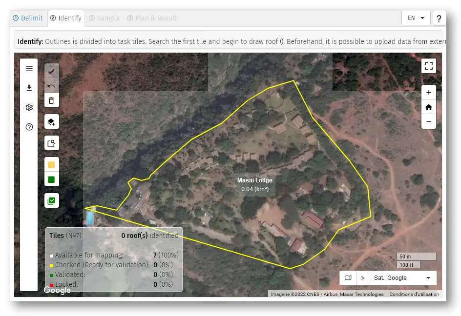
The polygon has been divided into “tiles” by the GPS Sampling app (these are virtual squares of 150m side ) with a white, semi-transparent border. For each tile, use the following procedure :
Rules for roof identification
Before proceeding further, please read these rules so that you can apply them.
- Roof size : Point roofs of any size above 3 meters on both side
- Roof contiguous: When two or more roofs are contiguous (even if different size / color) mark only one point
Before identifying roofs, activate your polygon by clicking in it !
Steps
-
To inspect a tile, you can:
- Click on the button Search and identify ().
- Click on the map inside the polygon.
- Use the arrows keys
Map zoom and the tile of interest appears at center of the screen with a white border.
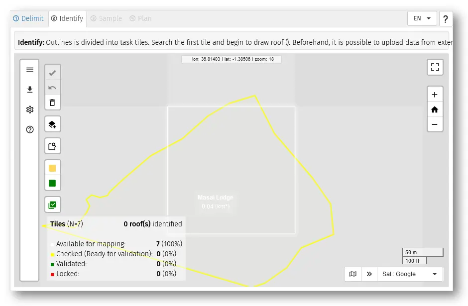
Click to mark every roof.
-
When all roofs have been marked in a tile, you can
- Click on the button Check ().
- Type [SPACE]
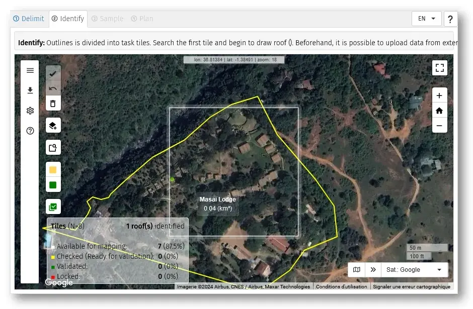
in this state the tile changes to a yellow border, see picture below on the bottom-right. By clicking a second time on SPACE , the satellite image moves to the second tile which appears with a white border, ready for marking roofs.
For each tile, continue the same way …
When all tiles of the polygone have been done : click on the button Valid All () to validate the pointing of roofs.
Notes:
- In case of mistakes : re-clicking on a roof allows to remove it.
- It is possible to change the size and color of marks by clicking the button Settings ().
- For the next tile, if some contiguous shelters were already pointed previously, their point is highlighted so that the user does not identify (click on it) again.
Step 3: Sample
In this page, you will randomly select a sample of waypoints from the ensemble of points from the previous step (“Identify”). It will then be possible to export the geographic coordinates of these sampled points to various devices (and at different formats).
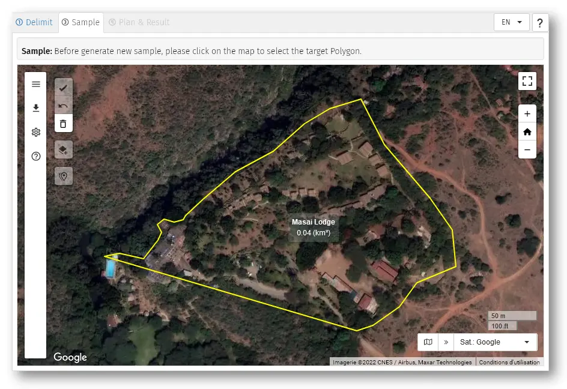
Steps
Select the polygon to sample
-
Click the button New Sample… (). The dialog box Sample Settings opens.

Click on the button Generate.
Close the dialog box.
Click on the button Save (). Confirm with OK.
Now, you can go to the last step Result
Notes:
The precision of the estimate will be increased by increasing the sample size : as much as the sampling units (here, the households) are numerous in the sample, the precision will increase. Outside of these exercises where we do not have enough time to go for a big sample, in real situation, a sample size that would allow sufficient accuracy would rather be around 300-400 households.
To be allowed to proceed to the next step, after points have been randomly sampled (by any of the two methods above), click on the icon
These sampled points (and coordinates) will be exported in the next section (tab “Results”).
Step 4: Results
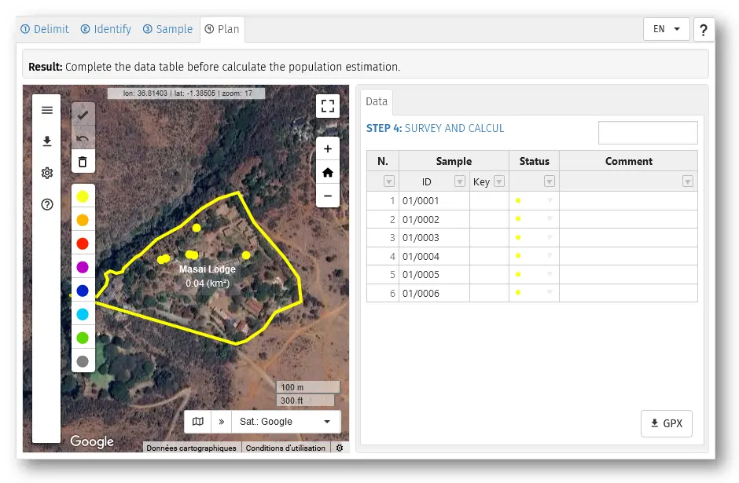
Steps
Select the polygon. You can also observe that the table of results appears in the right window.
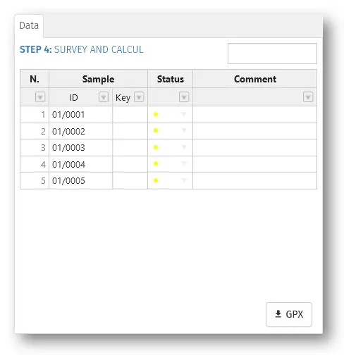
-
Export the file of sampled points from GPS Sampling:
Offline with a GPS device (Garmin eTrex):
- Click on the button GPX () and save the file in your computer’s disk.
- Connect the GPS device to the computer with the adapted USB cable. The GPS device should appear an an accessory/peripheric of the computer in the file explorer of the computer.
- Using Windows Explorer (file explorer) ago to the roots of the computer ( C: or D:) and open the Garmin eTrex folder, up to the …/GPX/… folder.
- Copy and paste the .gpx from the hard disk to the folder …/GPX/… folder in Garmin eTrex
- Eject the GPS device from the computer and unplug it.
Online with a smartphone without camera:
- Click on the button GPX () and save the file in your computer’s disk.
- Sent the .gpx file from the computer to an email address which can be accessed from the smarphone.
- Open the e-mail app in the smartphone and download the file.
- Go to the downloads folder of the smartphone and share the .gpx file with Osmand app.
Online with a smartphone with camera:
- Click on the button GPX (). A window opens with a QR code
- Scan this QR code with the smartphone and accept the download.
- Go to the downloads folder of the smartphone and share the .gpx file with Osmand app.
-
Field survey
Once the GPS waypoints of the sample is on the smartphone or device, you can perform your survey / RNA and collect data : retrieve these in the field (see separate procedure if needed) and interview household members